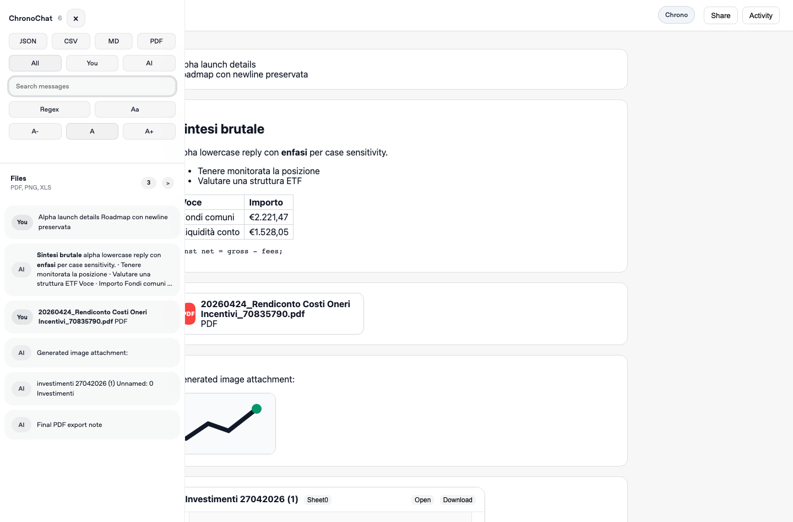

1
Conversation map
Every message becomes a clean waypoint.
A native-feeling conversation map for search, filters, shortcuts, and fast jump navigation.

Find the exact user or AI turn without manually scrolling through the entire thread.
Every message becomes a clean waypoint.
Query the thread while keeping context visible.
Focus only on the turns that matter.
Cmd/Ctrl + J, slash search, j/k, and Enter.
Export the full conversation while preserving semantic blocks like headings, lists, quotes, code, and images.